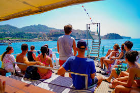

CityLoop Quest — Tropéa


Les enfants apprécient généralement la taille compacte du centre, les glaces et les vues spectaculaires. Pour éviter la fatigue, alternez une halte culturelle et un temps libre sur une place ou à la plage. Une chasse aux balcons, aux blasons ou aux bateaux transforme facilement la promenade en jeu.
Les poussettes rencontrent davantage de difficultés. Pavés, seuils, ruelles étroites et escaliers imposent parfois un détour. Un modèle léger ou un porte-bébé est plus pratique pour la descente vers l’Isola et les secteurs les plus anciens.
Les personnes à mobilité réduite peuvent profiter de Piazza Ercole, du Corso et de plusieurs belvédères supérieurs, mais l’accès aux plages et à certains monuments reste contraignant. Il est utile de contacter les sites pour connaître les rampes, ascenseurs ou entrées alternatives réellement disponibles.
En été, prévoyez eau, chapeau et pauses à l’ombre. La brise marine peut masquer la force du soleil sur le promontoire. Sur les plages, les chaussures aquatiques sont utiles près des rochers, tandis que les enfants doivent rester surveillés autour des grottes et des vagues.
Les toilettes publiques et espaces de change ne sont pas toujours réguliers. Repérer à l’avance un café, un musée ou un parking équipé évite les urgences logistiques. Une visite familiale réussie tient souvent à ces détails beaucoup moins photogéniques que Santa Maria dell’Isola.